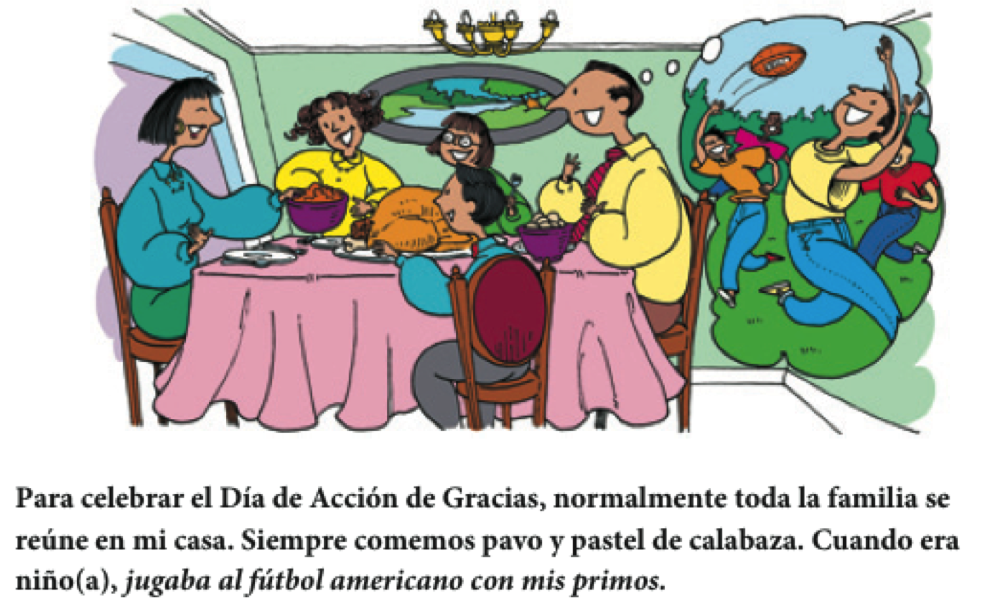
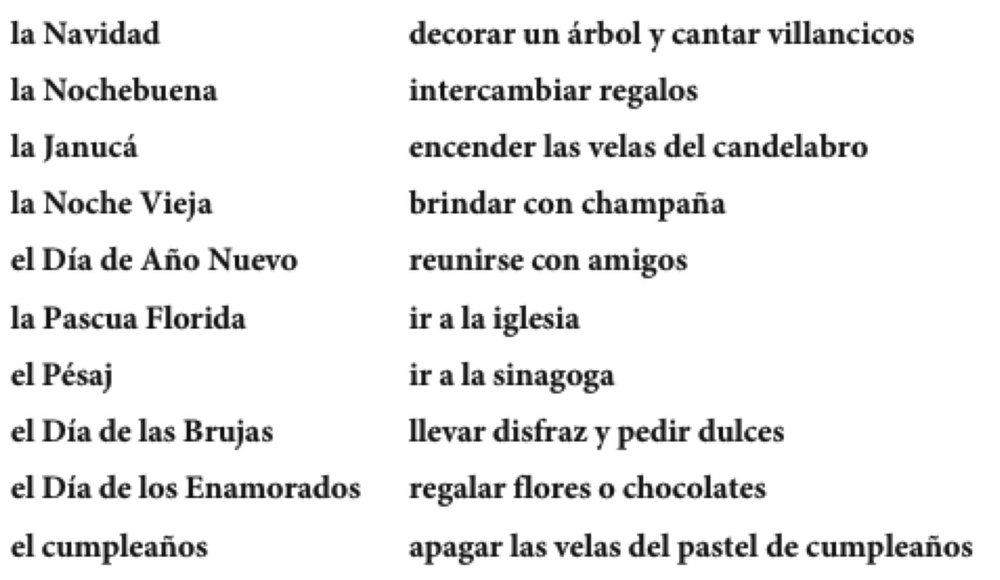
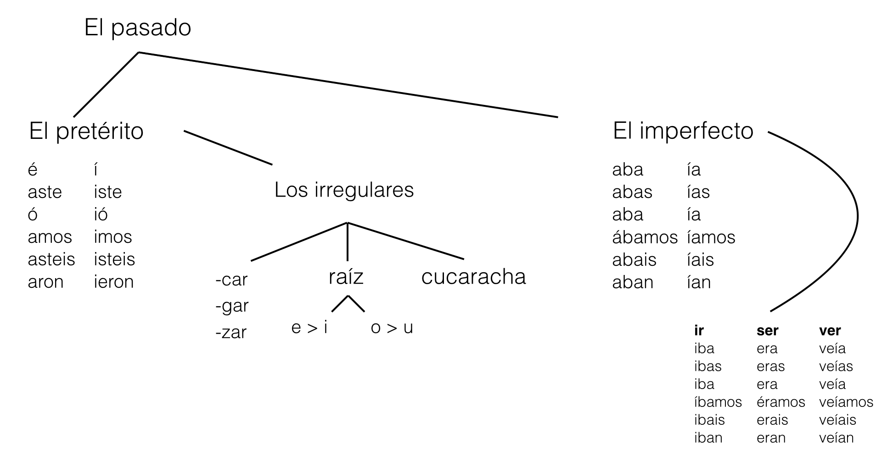

Español 1.5
Capítulo 7
Joseph V. Casillas
Middlebury College: Verano 2015
CAPÍTULO 7 “¡A divertirnos!”
Plan

Vocabulario:
- El tiempo libre
Gramática:
- Repaso del pretérito
El tiempo libre: las invitaciones
- ¿Cómo le invitaste a salir a tu paraje? Si no tienes, ¿cómo le invitarías a salir?
El tiempo libre: las invitaciones
- ¿Alguna vez has tenido que rechazar una invitación no deseada? ¿Cómo fue?
El tiempo libre: las invitaciones
Comprensión auditiva
- 7-1, p. 225
Un fin de semana divertido
- qué tal
- pasarlo bien/mal
Un fin de semana regular/malo

- sentir vs. sentirse
Las actividades populares
- ¿Qué hiciste durante el fin de semana?
- ¿Qué cosas te gustan hacer cuando no estás en Middlebury?
Descanso (10 minutos)

El pretérito: un repaso
Los verbos regulares:
- -ar: pasé, pasaste, pasó, pasamos, pasasteis, pasaron
- -er/-ir: comí, comiste, comió, comimos, comisteis, comieron
Los cambios en la forma yo:
- -zar > cé: almorcé, empecé
- -car > qué: busqué, toqué
- -gar > gué: llegué, jugué
- -zar > cé: almorcé, empecé
El pretérito: un repaso
Los verbos con cambios en la raíz
- e > i: pedir, repetir, vestirse, divertirse, servir, conseguir,
- o > u: dormir, morir
Los verbos irregulares
- ser, ir, tener, estar, hacer, dar, poder, poner, venir, querer, hacer, decir, traer, conducir
El pretérito (irregulares)

tener es tuve, estar es estuve
ir es fui, y tambien ser
poner es puse, poder es pude
traje es para traer
hacer hice, haber hube
saber supe, querer quise
decir dije, venir vine
ver vi, dar di
sin acentos
Los usos del pretérito: un repaso
Usamos el pretérito para:
- UNA acción o evento que ocurrió UNA vez.
- una SERIE de acciones en el pasado.
- una acción que DURÓ un tiempo específico.
- UN EVENTO ESPECÍFICO en el pasado.
Palabras asociadas con el pretérito:
- ayer, la semana pasada, el año pasado, primero,
luego
- antes de/después de + infinitivo, por último
- ayer, la semana pasada, el año pasado, primero,
luego
Hay verbos que asumen un significado distinto en el pretérito
Tarea
- Estudiad todas las formas del pretérito
- Ejerecicios opcionales
- CA6-14
- CA6-15
El plan
- Vocabulario:
- Las estaciones
- De viaje
- Gramática:
- Imperfecto
Prueba
Las estaciones

¿Qué tiempo hace hoy?


¿Qué tiempo hace hoy?

Otras expresiones de tiempo (3-11)

¿Qué tiempo hace hoy?
Cuál es tu estación favorita?
¿Cómo es el clima en esa estación donde tú vives?
¿Cuáles son tus actividades favoritas en esa estación?
¿Qué clima no te gusta? ¿Por qué?
Ej. 7-18, p. 235
Los días festivos y las celebraciones
- ¿Qué haces tú durante el Día de la independencia?

Los días festivos y las celebraciones
- ¿Qué sueles hacer para celebrar el Día de Acción de Gracias?

Los días festivos y las celebraciones
- ¿Qué te gusta hacer para celebrar tu compleaños?
Las celebraciones y las costumbres

- ej. 7-21, p. 238
Descanso (10 minutos)
El imperfecto es otra forma de expresar el pasado.
| -ar | -er | -ir | |
|---|---|---|---|
| celebrar | comer | recibir | |
| yo | celebraba | comía | recibía |
| tú | celebrabas | comías | recibías |
| Ud./él/ella | celebraba | comía | recibía |
| nosotros(as) | celebrábamos | comíamos | recibíamos |
| vosotros(as) | celebrabais | comíais | recibíais |
| Uds./ellos/ellas | celebraban | comían | recibían |
Solo hay tres verbos irregulares en el imperfecto.
| ir | ser | ver | |
|---|---|---|---|
| ir | ser | ver | |
| yo | iba | era | veía |
| tú | ibas | eras | verías |
| Ud/él/ella | iba | era | veía |
| nosotros(as) | íbamos | éramos | veíamos |
| vosotros(as) | ibais | erais | veíais |
| Uds./ellos/ellas | iban | eran | veían |
- ¡OJO! No hay verbos con cambios en la raíz.
- El tiempo presente: Siempre vuelvo a casa a las diez.
- El imperfecto: Cuando era joven, siempre volvía a casa a las ocho.
(1) El imperfecto describe las costumbres, los hábitos y las rutinas en el pasado.
Palabras importantes:
- generalmente, normalmente, (casi) siempre, todos los días, todos los años, a menudo, a veces, de vez en cuando
- generalmente, normalmente, (casi) siempre, todos los días, todos los años, a menudo, a veces, de vez en cuando
Ej.
- De niño, yo visitaba a mis abuelos todos los años.
(2) El imperfecto describe las características de las personas, los lugares y las cosas.
Las descripciones físicas, mentales, emocionales Y los datos personales
Ej.
- Mi abuelo era alto, inteligente y simpático.
- Tenía setenta años pero parecía más joven.
(3) El imperfecto describe la información secundaria de un cuento.
El trasfondo de la historia:
- la hora, el tiempo, la fecha, el lugar.
Ej.
- Eran las once de la noche y llovía.
El imperfecto describe los pensamientos, los sentimientos y las acciones continuas en el pasado.
- Ej.
- El niño no creía en Papá Noel.
- Los niños miraban el desfile en la tele.
Ejercicios
- 7-26, p. 242*
- 7-27, p. 243
- 7-29, p. 244*
Tarea
Plan
- Vocabulario:
- Contar un cuento
- Gramática:
- Pretérito/Imperfecto
- Preparar el cuento (2 minutos)
Prueba
Hola Javier,
Ya llevo muchas semanas en la Escuela Española y creo que me estoy volviendo loco. La semana pasada yo vi que no siempre es divertido estar en Middlebury. Los profesores me dieron mucha tarea y yo estuve enfermo durante 2 días. Mis amigos y yo quisimos ir al lago Dunmore, pero no hubo manera con tanta tarea. Al final nosotros fuimos al grill cada noche para estudiar más. Por si te parece poco, mi mejor amigo tuvo que dejar el programa porque tenía demasiado estrés y se le cayó todo el pelo.
Prueba
Él se puso malo después de las pruebas del profesor Joseph. La semana pasada yo te dije que me encantaba Middlebury, pero yo llegué a la conclusión de que echo de menos a mi madre y no sé para qué yo vine. Le escribí una carta en español pero creo que ella ni la leyó. ¿Cómo pudiste aguantar todo esto durante 7 semanas? Yo busqué información en la oficina de los bilingües, pero ni modo. Espero sobrevivir hasta el final. Si no me ves dentro de dos semanas, es porque me mató la comida de Proctor.
Con mucho miedo,
Martín
Cómo contar un cuento
Expresiones de interés
- Las expresiones de interés ayudan a que la conversación fluya naturalmente
- ¿Habéis escuchado otras expresiones en vuestras conversaciones en Middlebury?
Algunas preguntas típicas
- Estas preguntas sirven para avanzar el cuento.
- Notad que algunas están en el pretérito y otras en el imperfecto. ¿Por qué?
- 7-30, p. 246
- 7-31, p. 246
El imperfecto
- En un cuento, el imperfecto describe el trasfondo de la historia y crea una imagen.
- Era una noche fría de invierno. Yo estaba en casa, sola y aburrida. Bueno, no estaba completamente sola, porque allí a mi lado, tenía mi gato. Mi gato se llamaba Tigre y era un gato de esos egoístas y fríos. Normalmente, Tigre pasaba la noche en el dormitorio donde dormía debajo de mi cama. Pero esa noche parecía un poco nervioso y se escondía detrás de los cojines del sofá.
- la hora, la fecha, el lugar
- describir los personajes
- describir las costumbres
- ¿Qué pasa en este momento?
El pretérito
- En un cuento, el pretérito narra los eventos importantes del cuento.
- De repente, Tigre saltó del sofá y corrió a la puerta. Yo lo seguí y abrí la puerta con cuidado.
En combinación...
- Describimos más con el imperfecto.
- Continuamos y resumimos con
el pretérito .
El imperfecto:
- Afuera, nevaba un poco.
- La luna brillaba como el sol, pero afuera no se veía a nadie.
El pretérito :Cerré la puerta yvolví a sentarme en el sofá.Fue una experiencia un poco inquietante.
Ejercicio
- 7-34, p. 249
Descanso (10 minutos)
El pretérito y el imperfecto:
¿Cómo era?
- Había una vez una princesa muy hermosa. Una tarde de primavera, la princesa cantaba y paseaba por el parque del palacio cuando de repente
oyó una voz muy bajita.Miró a su alrededor yvio un sapo que le sonreía desde el suelo...
El pretérito y el imperfecto:
Dos acciones: el imperfecto describe las acciones continuas y simultáneas.
Palabras importantes:
- mientras
- mientras tanto
Ángel miraba el desfile en la televisión mientras yo cocinaba.

El pretérito y el imperfecto:
El pretérito narra una serie de acciones completadas.
Después de mirar el desfile, Ángel
llamó a su amiga y lainvitó a salir. Primerofueron al cine y luegomiraron los fuegos artificiales.

El pretérito y el imperfecto:
- El imperfecto expresa una acción continua.
El pretérito expresa su interrupción.Palabras importantes:
- mientras.... (el imperfecto)
- cuando (el pretérito)
Empezó a llover mientras hacíamos nuestro picnic.

Ejercicios
- 7-38, p. 252*
- 7-39, p. 253
Preparar el cuento (2 minutos)
Plan
- Gramática:
- El pluscuamperfecto
- Preparar el cuento (2 minutos)

El imperfecto
1)
- Dos acciones: el imperfecto describe las acciones continuas y simultáneas.
2)
- El pretérito narra una serie de acciones completadas.
El imperfecto
3)
- El imperfecto expresa una acción continua.
- El pretérito expresa su
interrupción .
Práctica (7-39, p. 253)
Más práctica
- 7-40, p. 254
El pluscuamperfecto
Se utiliza para hablar de una acción terminada que ocurre antes de otra acción en el pasado.
- Cuando Jaime llegó, Susana ya había abierto sus regalos.
- Marisol ya había salido cuando llamaste.
El pluscuamperfecto
- Se utiliza para hablar de una acción terminada que ocurre antes de otra acción en el pasado.
- Cuando Jaime llegó, Susana ya había abierto sus regalos.
- Marisol ya había salido cuando llamaste.
El pluscuamperfecto

- Se forma exactamente como el presente perfecto
- La excepción es que el verbo haber se conjuga en el imperfecto
- haber (presente) + participio pasado = presente perfecto
- Ya he hecho la tarea.
- haber (imperfecto) + participio pasado = pluscuamperfecto
- Ya había hecho la tarea cuando llegaste.
El pluscuamperfecto
- ¡OJO!
- Sigue habiendo formas irregulares del participio pasado.

Ejercicios
- GS7-1, p. 350
- GS7-2, p. 350
Descanso (10 minutos)
Presentación oral 3 - más información
- Podéis contar un cuento conocido
- Blancanieves
- Caperucita roja
- Cenicienta
- Podéis contar una historia personal
- Un día importante/divertido/gracioso en tu vida
- Podéis inventaros un cuento completamente falso
A practicar
- http://youtu.be/lSscCgcFtM0
- Decidid qué tipo de cuento quieres contar y practicad la descripción
- anunciar el cuento (les voy a contar un cuento sobre XXX) (optativo)
- situación inicial (descripción de personajes y lugares, Érase una vez, Suele ser en imperfecto)
- nudo o acción (de repente, un día, Suele ser en pretérito)
- intriga o reacción
- desenlace
- situación final (tiene cierta simetría con la situación inicial, Vivieron felices y comieron perdices)
- moraleja (optativa)